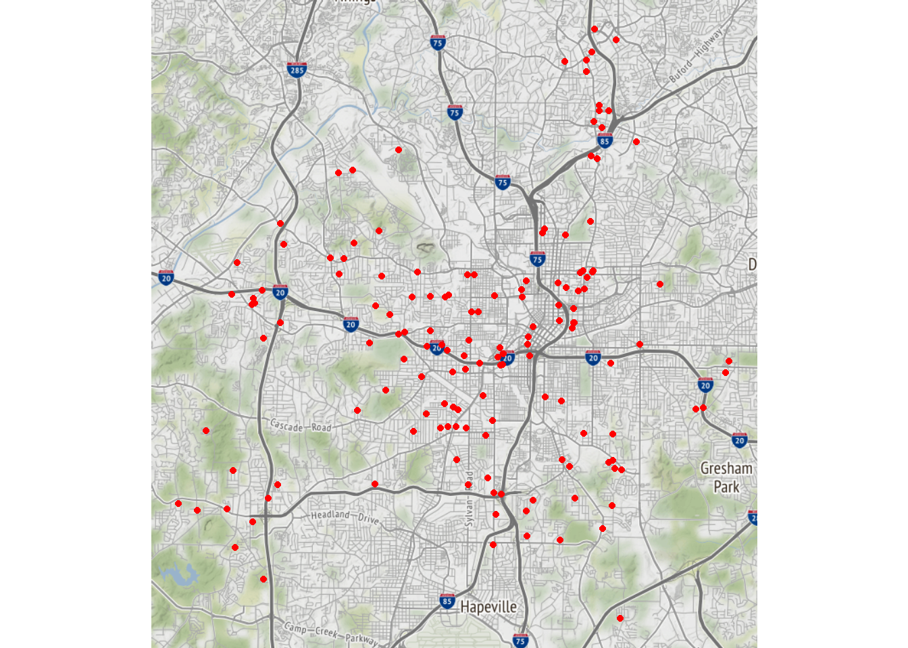
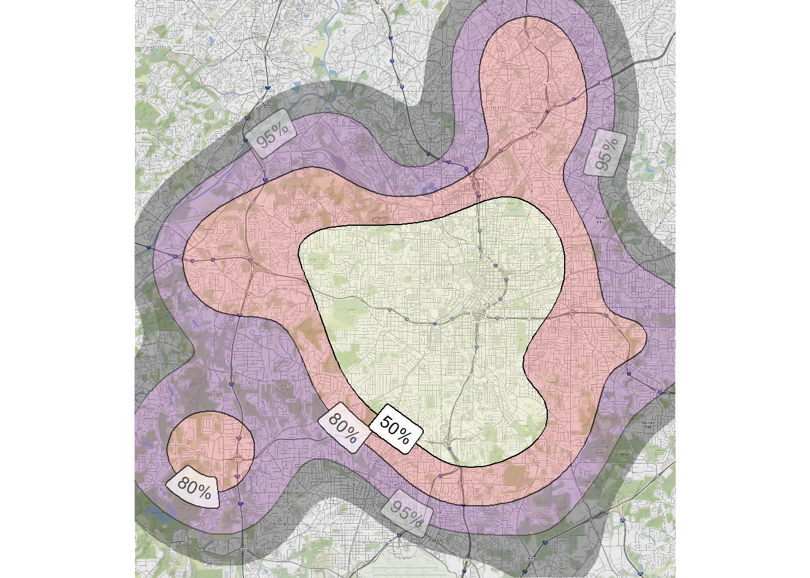
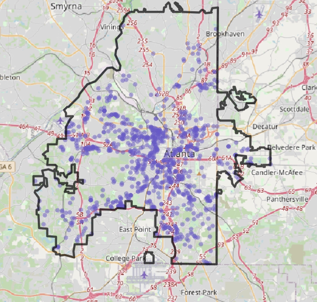

library(tidyverse)
library(ggmap)
library(ggdensity)
library(geomtextpath)How to create maps with ggmap
The ggmap package makes life easier when you are trying to visualize geographic data.
It connects the ggplot2 framework with mapping services allowing the user to create powerful and insightful maps.
What kind of map will I be making?
I will be working with crime data from the City of Atlanta Police Department. For this analysis I will use the 2021 crime data and I want to visualize the reported homicides.
R packages
I will be using the tidyverse, ggmap, ggdensity and geomtextpath packages. Below you can view the documentation for the respective package.
| Package | Documentation |
|---|---|
| tidyverse | tidyverse.tidyverse.org |
| ggmap | www.rdocumentation.org/packages/ggmap |
| ggdensity | jamesotto852.github.io/ggdensity |
| ggtextpath | www.rdocumentation.org/packages/geomtextpath |
If you are missing any of these package then use this code to install them.
install.packages("tidyverse")
install.packages("ggmap")
install.packages("ggdensity")
install.packages("geomtextpath")Once you have everything installed load the packages.
You have to load the packages each time you use them, but you only have to install them once
The data
Click here to see all of the available Atlanta crime data
Click here to download the 2021 Atlanta crime data
Once you have the data you want to use then load it into R.
I downloaded the 2021 Atlanta crime data, cleaned the column names, filtered for only homicide reports, and only kept these columns:
-offense_id
-lat
-long
My data is in my working directory named ‘atl-homicides-2021.csv’, I can use the read_csv() function from the readr package (included in tidyverse) and turn the .csv file into a data frame within R. I will name this data frame cobra_df.
cobra_df <- read_csv("atl-homicides-2021.csv")
Next I will create a simple map that shows the general location of each reported homicide. Each reported homicide location will be marked with a red circle.
map_1 <- qmplot(long, lat, data = cobra_df,
source = "osm", maptype = "roadmap",
color = I("red"))
map_1
Now I want to look deeper and create a 2D density plot, using the geom_hdr() function from the ggdensity package allows me to perform 2D density estimation. The geomtextpath package creates the labels, and in this case I am creating labels on the map that correspond to the probabilities for a reported homicide within the respective contoured region.
map_2 <- qmplot(long, lat, data = cobra_df, geom = "blank",
zoom = 14, source = "osm", maptype = "roadmap") +
geom_hdr(aes(fill = stat(probs)), alpha = .3) +
geom_labeldensity2d(aes(long, lat, level = stat(probs)), stat = "hdr_lines") +
scale_fill_viridis_d(option = "A") +
theme(legend.position = "none")
map_2
What did I learn from this?
When I was new to R my favorite learning activity was to try and create crime “heatmaps” with Atlanta’s crime data. Now over 1 year later revisiting this was a good change of pace. I was able to learn about these packages and figure out how to actually extract insights from geographic data (rather than just making cool looking maps).
Bonus!
For some insight on how my mapping skills have changed over time
Here is a picture of the first map I created in R on May 5th, 2021.

This map took many hours to make, and shows Atlanta’s reported homicides from 2009-2020 including some of 2021’s preliminary data.
Contact me
Reach out to me if you have any feedback, questions, or suggestions! I am open to collaborating with others on projects and expanding my network! Until next post!